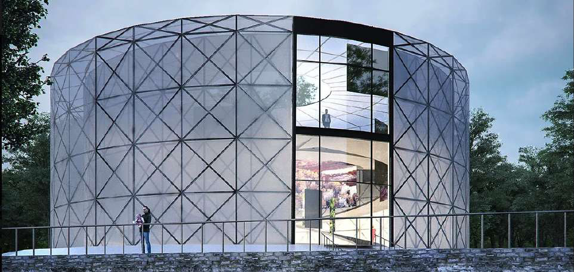
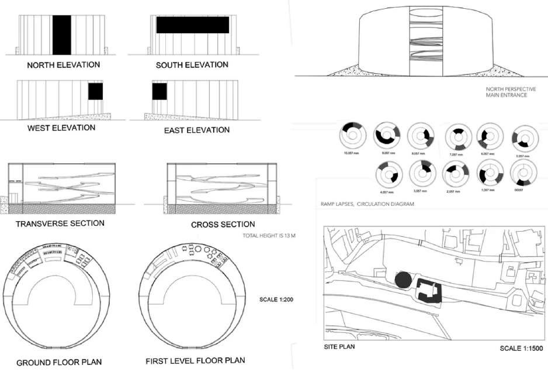

Bachelor's thesis, 2014. Inspired by a Möbius strip: an ETFE-wrapped museum with an endless path among pictures and sculptures. A contrasting shape and material on the riverside in Prague, CZ.

An endless path among pictures and sculptures.
Inspired by a Möbius strip. Contrasting shape and material on the riverside in Prague.
Bachelor's thesis: a museum inspired by a Möbius strip, wrapped in ETFE, with an endless path among pictures and sculptures.
A contrasting shape and material on the riverside in Prague, Czech Republic.
